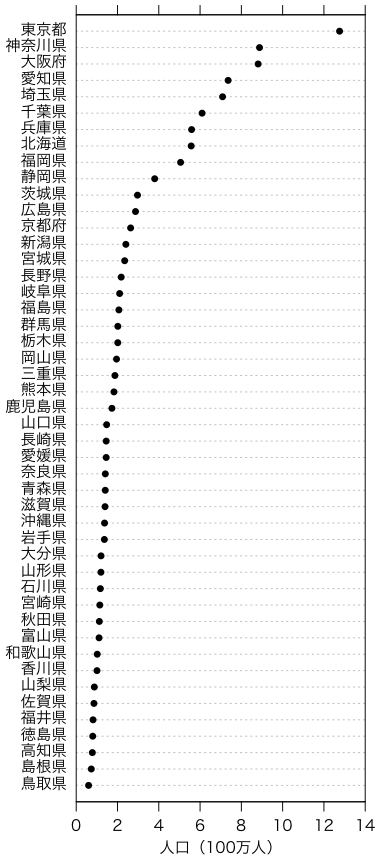

ここでもデータの例として いろいろな都道府県別データ の人口を使います。
棒グラフは必ず0から始まらなければなりません。折れ線グラフにはこの制約はありませんが，名義尺度では使えません。都道府県のような名義尺度の場合には，（Clevelandの）ドットプロット（dot plot）が便利です。これは，基本的には
# par(family="HiraKakuPro-W3")
dotchart(population, labels=kenmei)
で描けますが，少しだけ凝ってみます：
# quartz(width=4.568898, height=9.960630) # Mac
# par(family="HiraKakuPro-W3") # Mac
par(mar=c(5,5,2,2)+0.1) # マージン（デフォルト: c(5,4,4,2)+0.1）
par(mgp=c(2,0.8,0)) # 軸マージン（デフォルト: c(3,1,0)）
par(xpd=FALSE) # プロットエリア外に描かない
par(xaxs="i") # プロットエリアを範囲ぴったりに
o = order(population)
dotchart(population[o]/1000, pch=16, xlim=c(0,14), xlab="人口（100万人）")
par(xpd=TRUE) # プロットエリア外に描く
text(0, seq_along(o), kenmei[o], pos=2)
axis(3, labels=FALSE)

dotchart() はRで標準のものですが，lattice
パッケージにはやや高機能のものが入っています。これは基本的には
library(lattice)
dotplot(kenmei ~ population)
でいいのですが，少しだけ凝ってみます：
library(lattice)
x = reorder(kenmei, population)
dotplot(x ~ population/1000, scales=list(fontfamily="HiraKakuPro-W3"), xlab="")
mtext("人口（百万人）", 1, padj=4.5)
HiraKakuPro-W3
はMacのフォントですので，適宜変更してください。
epicalc パッケージにも dotplot()
という関数がありますが，これは点で描いた度数分布図です。epicalc
パッケージでは summ()
という関数でデータの要約を出力しますが，それに付随して大きい順に並べ替えたデータがプロットされます。こちらのほうがClevelandのドットプロットに近いものです。詳しくは
Analysis of epidemiological data using R and Epicalc
というオンライン本が公開されています。
epicalc パッケージは epiDisplay パッケージに改編されたようです。Why was package 'epicalc' removed from CRAN? 参照。
Last modified: